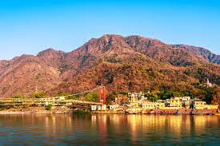
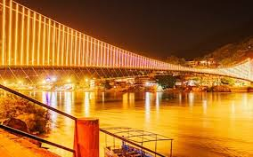
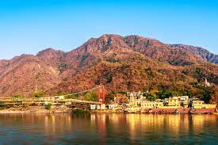
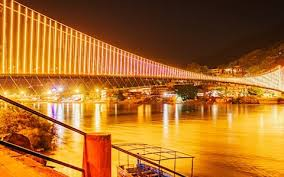
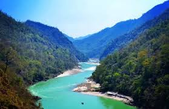
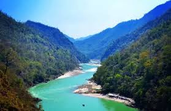

Laxman Jhula & Ram Jhula
Iconic suspension bridges offering river views and walkable lanes.
Rishikesh is a peaceful riverside town known for yoga retreats, ashrams, Ganga Aarti, and adventure sports. With calm river beaches, the iconic Laxman Jhula and vibrant cafes, it's popular among both backpackers and families.
Visitors can relax, attend meditation classes, explore the jungle trails or enjoy rafting and cliff jumping in Shivpuri.
Iconic suspension bridges offering river views and walkable lanes.
A beautiful evening ceremony with chants, lamps and peaceful ambience.
Graffiti-filled meditation centre visited by The Beatles in 1968.
India’s most popular white-water rafting stretch.
Peaceful riverside ceremony at Triveni Ghat around sunset.
Shivpuri to Rishikesh stretch is the most famous adventure route.
Explore abandoned meditation huts, murals and quiet forest trails.
Flexible plans depending on your travel style.
Short visit
Best for most visitors
Slow travel
Hostels, boutique hotels and cafes popular with backpackers.
Best area for young travelers.
Balanced stays with river access, yoga centres and ashrams nearby.
Good for families and peaceful stays.
Adventure camps and riverside tents close to rafting points.
Ideal for adventure groups.
 



 

Helpful reminders for smooth travel.